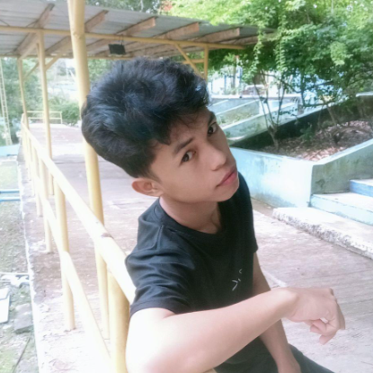

Personal Portfolio
Cybi L. Tuto
About Me
My name is Cybi L. Tuto, and I live in the peaceful barangay of Patawag, located in Labason, Zamboanga del Norte. At 19 years old, I enjoy exploring new experiences and learning more about the world around me. Growing up in this vibrant part of Mindanao has shaped my values and given me a strong sense of community. Whether I'm spending time with family, pursuing my hobbies, or planning for the future, I take pride in where I come from and the journey I'm on. I'm a trainee web developer who blends technical precision with cultural expression. Whether I'm crafting login systems in PHP or designing interfaces that echo Filipino heritage, I build with purpose and pride.
Hobbies
Playing video games is my favorite hobby because it allows me to explore new worlds, challenge my skills, and connect with others. Whether I'm solving puzzles, battling enemies, or building virtual cities, gaming gives me a sense of excitement and creativity. It helps me relax after a long day and keeps my mind sharp through strategy and quick decision-making. I enjoy discovering different genres—from action-packed adventures to peaceful simulation games—and each one offers a unique experience. For me, video games are more than just entertainment; they’re a way to express myself and have fun doing what I love. I love watching anime because it brings stories to life in the most vibrant and imaginative ways. Each series offers a unique blend of emotion, action, and artistry that captivates me from start to finish. Whether it's the heartfelt journey of friendship, the thrill of epic battles, or the beauty of everyday moments, anime speaks to my soul and sparks my creativity. The characters feel real, their struggles and triumphs resonate deeply, and the animation styles are often breathtaking. Watching anime is more than just entertainment—it’s a window into different cultures, emotions, and ideas that inspire me every day.
Favorite Food
My favorite food is lechon manok, especially when it's perfectly roasted with crispy skin and juicy meat—it’s always a satisfying meal. I also enjoy eating vegetables because they make me feel healthy and energized. However, there's one exception: I don’t like ampalaya. Its bitter taste just doesn’t sit well with me, even though I know it’s good for the body. Overall, I love meals that combine flavor and nutrition, and lechon manok with a side of fresh veggies is always a winner for me.
Learning Journey
I began my educational journey at Patawag Elementary School, where I first discovered my love for learning. Later, I transferred to Barangay Mabuhay Elementary School, where I completed my elementary education and graduated. For high school, I enrolled at Liloy National High School and proudly graduated from there as well. During my senior high school years, I studied at Ave Maria College, where I continued to grow academically and personally, eventually earning my diploma. Currently, I am pursuing my college education at Sibugay Technical Institution (STII), where I continue to build my skills and prepare for a meaningful future.
Skills
My programming skills are still a work in progress, but I wouldn’t say they’re bad either. I’m learning step by step, gaining more confidence as I explore different languages and techniques. While I still make mistakes and face challenges, I’m proud of how far I’ve come and how much I’ve improved. Every project I work on teaches me something new, and I’m determined to keep growing until I become truly skilled in this field.
Contact
Phone number: 09525308535
Gmail: cybituto2004@gmail.com
tutocybi656@gmail.com
Address: Patawab,Labasaon,Zamboanga del Norte
Facebook: Cybi Lubrido Tuto, Cybi Tuto
Achievement
Throughout my academic journey, I received several rewards during my elementary, high school, and senior high school years, each marking a proud moment of growth and accomplishment. However, among all these milestones, my greatest achievement is graduating without ever experiencing failure. It stands as a testament to my perseverance, resilience, and commitment to finishing what I started.